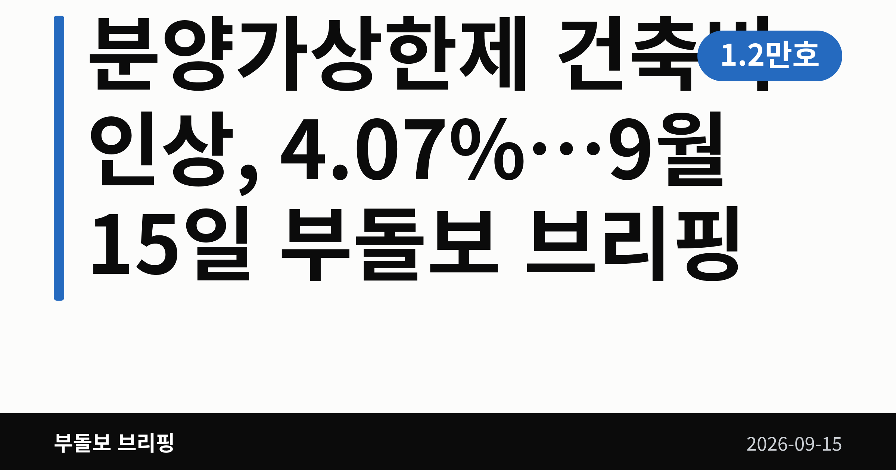
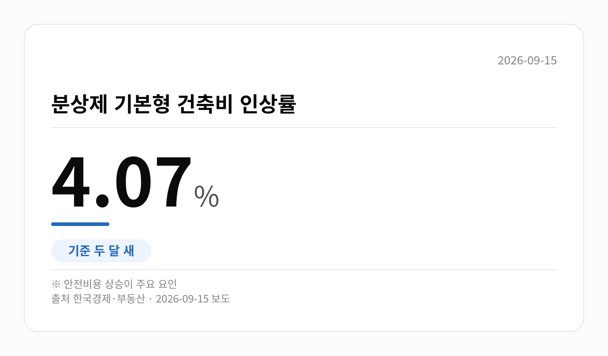
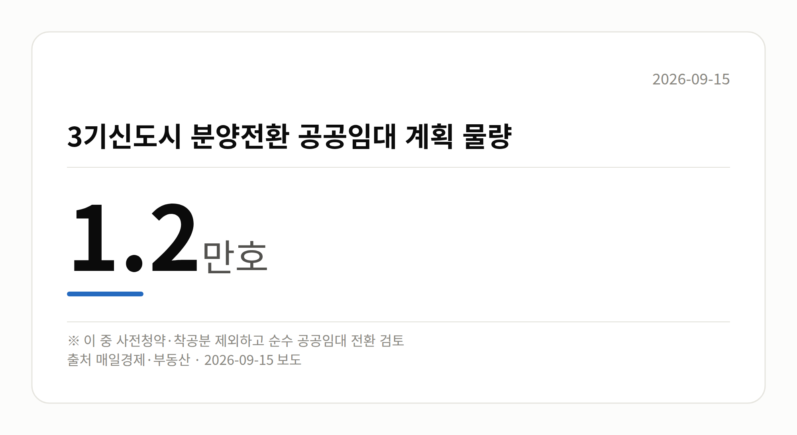
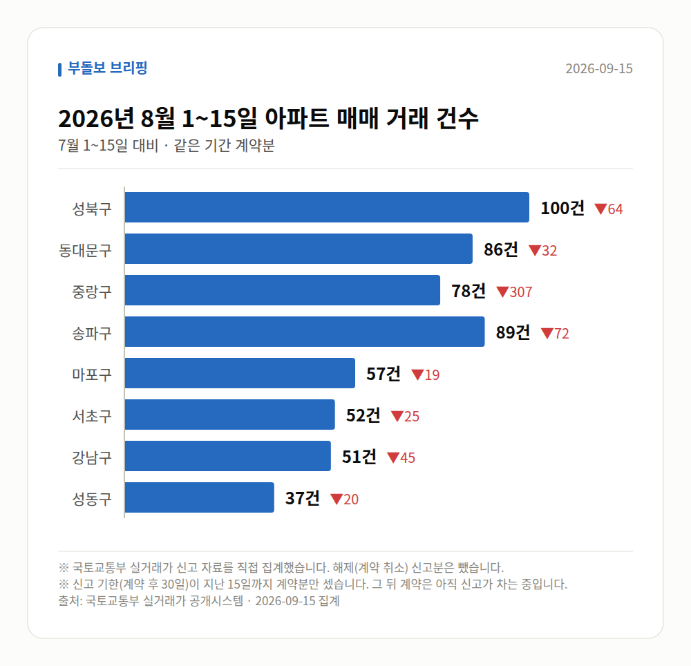

이 글은 2026년 9월 15일 기준으로 정리한 내용입니다. 실거래 거래 건수는 2026년 8월 1~15일 계약분(신고 기한이 지난 것), 전세가율 등은 2026년 7월 신고분입니다.
오늘 부동산 소식의 중심은 분양가상한제 건축비 인상입니다. 두 달 새 4.07% 오르는 것으로 나타났습니다.
적용 대상은 강남·서초·송파·용산 등 서울 핵심 지역과 3기 신도시 공공분양입니다. 청약을 준비 중이시라면 눈여겨보실 대목입니다.

분양가상한제는 아파트 분양가를 땅값과 건축비를 더한 금액 아래로 제한하는 제도입니다. 그 건축비의 기준이 되는 값이 '기본형 건축비'입니다.
이번에 발표된 수치는 아래와 같습니다.
| 항목 | 내용 |
|---|---|
| 인상률 | 4.07% (두 달 새) |
| 배경 | 재해방지 등 안전비용 증가 |
| 적용 | 강남·서초·송파·용산, 3기 신도시 공공분양 |
출처는 한국경제·매일경제 부동산 보도입니다. 다만 한국경제 기사는 본문 요약이 제공되지 않아, 이 상승률 외 세부 내용은 확인되지 않았습니다.
건축비 기준이 오르면 분양가상한제가 적용되는 민간·공공 아파트의 분양가도 함께 영향을 받을 수 있습니다.
즉 앞서 본 인상 폭만큼 곧바로 분양가가 오른다고 단정할 수는 없지만, 실수요자의 자금 부담이 커질 가능성은 열려 있습니다.
여러분이 해당 지역 청약을 준비하고 계신다면, 관심 단지의 모집공고에서 건축비 산정 기준이 언제 것으로 적용됐는지부터 확인해 보시는 편이 좋겠습니다.
홍지선 국토교통부 장관 후보자는 인사청문회에서, 3기 신도시 분양전환 공공임대 계획 물량 1.2만호 가운데 일부를 순수 공공임대주택으로 돌리는 방안을 검토하겠다고 밝혔습니다.
분양전환 공공임대는 일정 기간 임대로 살다가 분양을 받을 수 있는 유형입니다. 순수 공공임대로 바뀌면 그 기회는 줄어들 수 있습니다.
다만 사전청약·착공 물량은 제외하는 방향으로 검토 중이며, 전환 대상의 정확한 규모와 지역별 계획은 아직 공개되지 않았습니다.

서울 8개 구에서 계약된 매매는 550건입니다. 7월 1~15일 1134건과 견주면 -584건입니다.
거래가 많은 곳: 성북구 100건(-64) · 동대문구 86건(-32) · 중랑구 78건(-307)
신고 기한(계약 후 30일)이 지난 15일까지 계약분끼리 견줬습니다.
중랑구 전세가율(전세 보증금 ÷ 매매가)은 가운뎃값 62.0%입니다. 같은 단지·같은 면적 35곳을 견줬습니다.
서울 25개 구 가운데 거래가 가장 크게 움직인 곳: 중랑구 -79.7%(385→78건, 7월 1~15일엔 묵동에 77.4% 몰렸음) · 영등포구 -49.2%(132→67건)
2026년 8~9월 계약 신고가

→ 그림 파일 img-stats-volume.png 을 이 자리에 올리세요
국토교통부 실거래가 신고 자료를 직접 집계했습니다. 해제(계약 취소) 신고분은 뺐습니다.
여러분이 관심을 두고 계신 단지는 분양가상한제 적용 지역인가요, 아닌가요?
댓글로 알려 주시면 다음 글에 반영하겠습니다.